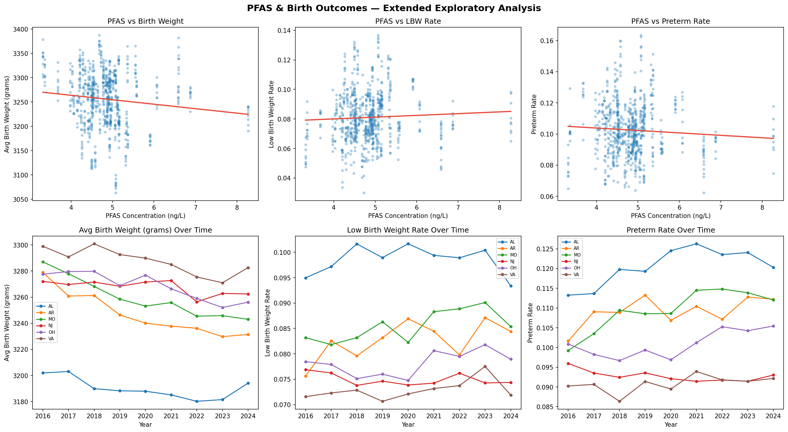
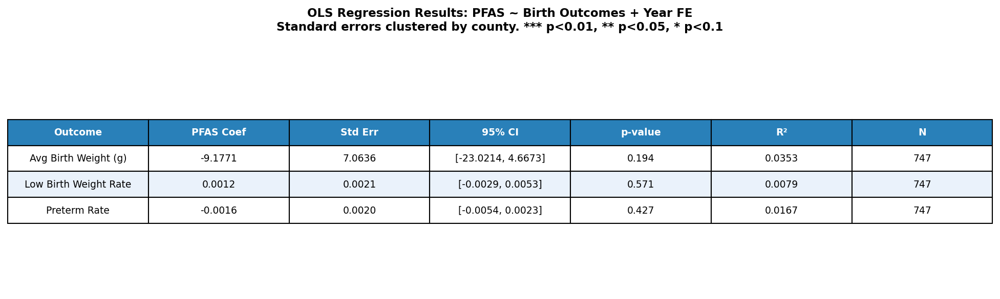

Technical Report
Purpose
This report documents the workflow used to collect, clean, merge, and analyze PFAS drinking water contamination data alongside CDC birth weight and gestational age records. It is intended to make the analysis reproducible by showing the full path from raw EPA monitoring data to the final county-year panel and downstream regression results.
1. Data Sources
The analysis draws on four primary data sources:
- EPA UCMR PFAS Monitoring Data: Sample-level PFAS measurements (ng/L) from public water systems, including minimum reporting levels and population served
- EPA SDWA Geographic Areas: Maps public water system IDs to the counties they serve
- Census National County FIPS Crosswalk: Links county names to standardized 5-digit FIPS codes
- CDC WONDER Weight at Birth: County-year panel data on average birth weight, birth counts, low birth weight rates, and preterm rates from 2016–2024
- CDC WONDER Gestational Age at Birth: County-year panel data on average gestational age and number of births at different gestational ages
2. Pipeline
The pipeline is implemented in the pfas_birthweight package, available on PyPI. The main entry point is build_extended_panel(), which runs the full pipeline end-to-end and returns a county-year DataFrame ready for analysis.
The pipeline runs through the following steps:
- Load and clean PFAS data: Raw sample-level measurements are loaded from the EPA monitoring file. Non-detects are replaced with half the minimum reporting level (MRL/2), a standard imputation method in environmental health research.
- Collapse to PWS level: Samples are averaged to an unweighted mean at the public water system level, retaining population served for later weighting.
- Merge with EPA geographic areas: PWS IDs are matched to counties using the EPA SDWA geographic areas dataset, filtering for county-level service area codes.
- Aggregate to county level: PFAS concentrations are aggregated to the county level using population-weighted averages, grouping by state and county to avoid collapsing same-named counties across states.
- Attach FIPS codes: County names are standardized and matched to 5-digit FIPS codes using the Census crosswalk, removing suffixes such as “County”, “Parish”, and “City”.
- Merge with birth outcome data: County-level PFAS estimates are merged onto the CDC WONDER panel by FIPS code, producing a county-year dataset. Low birth weight rates and preterm rates are joined from separate CDC WONDER extracts.
- Merge with gestational age data: County-level gestational age estimates are merged onto the CDC WONDER panel by FIPS code, producing a comprehensive county-year dataset.
Data limitations: Two sources of attrition merit note. CDC WONDER suppresses cells for counties with fewer than 10 births in a given year for any category of birth. For example, if there were fewer than 10 births under 3000g in a given year, that cell would be suppressed, which may undersample rural counties disproportionately. Additionally, not all PWS IDs match to a county via the EPA geographic areas file, and not all county names match cleanly to the Census crosswalk — unmatched counties are excluded from the analysis. Non-detect imputation as MRL/2 follows standard practice.
3. Data Structure
The final panel produced by build_extended_panel() contains the following columns:
| Column | Description |
|---|---|
FIPS |
5-digit county FIPS code |
STATE |
2-letter state abbreviation |
COUNTY_SERVED |
County name |
year |
Year (2016–2024) |
births |
Number of births |
avg_birth_weight |
Average birth weight (grams) |
PFAS_county |
Population-weighted mean PFAS concentration (ng/L) |
lbw_rate |
Low birth weight rate (births under 2,500g / total births) |
preterm_rate |
Preterm rate (births under 37 weeks / total births) |
This structure separates what was sourced directly from the raw data files from what was derived during the pipeline, making it straightforward to trace any column back to its origin.
4. Analysis
The final dataset contains 404 unique counties across 6 states with 747 county-year observations. Analysis is performed using OLS regression with year fixed effects and standard errors clustered by county:
\[Y_{ct} = \beta \cdot \text{PFAS}_{c} + \gamma_t + \varepsilon_{ct}\]
Where \(Y_{ct}\) is the birth outcome in county \(c\) and year \(t\), and \(\gamma_t\) represents year fixed effects controlling for national trends over time. Because PFAS exposure is collapsed to a single cross-sectional value per county, county fixed effects are excluded by design as they would absorb the exposure variable entirely. Standard errors are clustered at the county level to account for serial correlation within counties over time. Based on prior environmental health literature, we expect \(\beta < 0\) for birth weight and \(\beta > 0\) for low birth weight and preterm rates.
Three outcomes are modeled separately: average birth weight, low birth weight rate, and preterm rate. Results are presented alongside 95% confidence intervals and significance stars following the convention *** p<0.01, ** p<0.05, * p<0.1.
5. Exploratory Data Analysis
Prior to regression, we examine the raw relationships between PFAS concentration and each birth outcome across the 404 counties in the sample. The scatter plots below show cross-sectional associations for the most recent year, while the time trend charts track state-level averages from 2016–2024.

The scatter plots suggest a modest negative association between PFAS concentration and average birth weight, consistent with prior literature. The relationship with low birth weight rate is weakly positive, and the preterm rate trend line is nearly flat, suggesting limited cross-sectional signal in the raw data.The time trends reveal meaningful variation across states. Alabama consistently shows the lowest average birth weights and highest preterm rates, while New Jersey and Virginia tend to perform better on both measures. Year fixed effects are included in the regression to account for the fact that all states trend downward in birth weight over time. We aimed to absorb that shared national pattern so the PFAS coefficient reflects cross-county differences in exposure rather than a common time trend.
6. Regression Results
OLS regression results are presented for all three birth outcomes in the table below. Across all three models, the coefficient on PFAS concentration is small in magnitude and statistically indistinguishable from zero. Average birth weight shows the largest point estimate at -9.18 grams per ng/L increase in PFAS (p=0.194), but the confidence interval [-23.02, 4.67] comfortably spans zero. The LBW rate coefficient is 0.0012 (p=0.571) and the preterm rate coefficient is -0.0016 (p=0.427), both negligible in magnitude. R² values across all three models are below 0.04, indicating that PFAS concentration and year fixed effects together explain very little of the variation in birth outcomes in this sample.

These null results should be interpreted carefully rather than taken as evidence that PFAS exposure has no effect on birth outcomes. Several features of the data and research design likely limit statistical power:
Limited EPA reporting coverage. PFAS concentrations in the sample range from approximately 3.5 to 8.5 ng/L, but this likely understates true exposure. The EPA’s monitoring programs test for a limited subset of PFAS compounds, leaving many variants undetected. With most counties clustered in a narrow band of reported concentrations, the exposure variable may not capture meaningful differences in total PFAS burden across counties.
Ecological aggregation. County-level averages are a coarse proxy for individual exposure. Measurement error introduced by aggregating across all water systems within a county could attenuate the PFAS coefficient toward zero. Studies that find significant associations typically use individual-level biomarker data rather than area-level estimates.
Geographic scope. The sample covers six states and 404 counties, which is not nationally representative. If the relationship between PFAS and birth outcomes varies by region for reasons such as differences in baseline health, economic demographics, or co-exposures then estimates from this sample may not generalize.
Time-invariant exposure. Because PFAS is collapsed to a single county-level average across the full monitoring period, the regression cannot exploit within-county changes in exposure over time. Any causal identification relies entirely on cross-sectional variation, which is more susceptible to confounding by unobserved county characteristics.
Taken together, these limitations suggest the null result is likely a product of data constrains and should not be taken as conclusive. Future work with broader geographic coverage, individual-level exposure data, or longitudinal PFAS measurements would provide a stronger test of the relationship.
7. Reproducibility
To reproduce the analysis:
- Install the package:
pip install pfas-birthweight - Ensure the bundled data files are present (included in the PyPI distribution)
- Run the pipeline:
from pfas_birthweight import build_extended_panel
panel = build_extended_panel()The pipeline is deterministic given the same input files. If the underlying EPA or CDC data files are updated, the package version should be incremented and the analysis rerun from scratch.
8. Exploration
After building the panel, the dataset can be explored interactively using the Streamlit app:
streamlit run app.pyThe app provides scatter plots of PFAS concentration against each birth outcome, county-level choropleth maps toggling between PFAS and outcome variables, time trend charts by state, and a regression results table. Each of these visualizations is filterable by state and year.